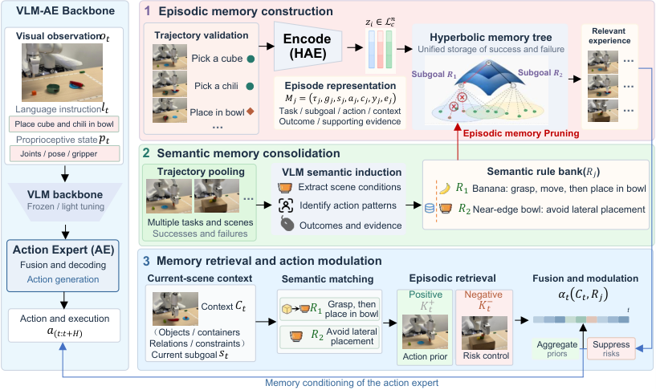

Paper Notes
Problem and Memory Representation
本文是 ECHO 层级经验记忆工作的扩展，研究跨任务积累的操作经验。Episodic memory 保存某次执行中具体发生的观察、动作和结果。Semantic memory 保存多个经验支持的条件化操作规则。此处 semantic 的含义偏向可复用知识，其载体包含场景条件和成功概率，和像素级类别特征有不同接口。
一段经历写成 Mᵢ=(zᵢ, gᵢ, sᵢ, aᵢ, cᵢ, yᵢ, eᵢ)，分别表示向量、全局任务、局部子目标、动作、场景条件、局部结果及证据。Qwen2-VL-7B-Instruct 提议子目标边界。模拟器状态谓词或人工记录核验局部成败，避免把整条任务的失败归给每一个子目标。
Hyperbolic autoencoder 将主干 hidden state 编码到具有 512 个空间维度的 Lorentz 空间，借助特征重建和 task–subgoal entailment 约束组织层级树。双曲空间用于容纳一般到具体的层次，树上的距离衡量经验相似性。
Paper Notes
Reading the Original Architecture

Boran Zhao et al. · Original figure, unmodified · arXiv perpetual non-exclusive license · Paper & Caption ↗
图 3 左侧输入为 RGB、语言指令和本体感知状态。上方先把核验后的执行片段编码为 episodic tree。中间的离线 consolidation 汇集跨场景成功和失败经验，VLM 提取条件与操作，形成带统计支持的规则库。红色回路表明规则还控制 episodic 向量的剪枝。
在线路径使用主干 hidden state 查询树，再结合当前场景条件匹配规则。匹配结果调节成功经验的聚合权重，失败统计用于控制风险。短期状态与长期经验融合后解码为 hidden-state correction，投影到 action expert，影响接下来的动作。
图中的 memory 同时改变存储内容和使用方式。阅读时应追踪三个输出，分别是剪枝后留下的向量、候选经验权重、最终注入系数。只观察最终成功率无法判断哪个环节产生收益。
Paper Notes
Consolidation with Verified Outcomes
规则 Rⱼ=(Cⱼ,Aⱼ,P̂ⱼ) 保存适用条件、操作和条件成功估计。VLM 提出条件结构，成功概率由验证过的结果统计得到。每个 episode 对同一规则最多计数一次，冲突或结果不明的记录暂不计入。条件修订后需要重新统计。
采用 Beta(1,1) 先验时，P̂=(n⁺+1)/(n⁺+n⁻+2)。教学算例中，8 次成功和 2 次失败得到 9/12=0.75。只有一次成功时得到 2/3，这反映有限证据下的平滑。后续门控还通过 n/(n+κ) 抑制小样本统计的影响。
规则保留 source evidence 和版本，并允许具体条件向较一般条件回退。这样可以追踪某个规则为什么存在，以及哪些观察支持它。
Rⱼ = (Cⱼ, Aⱼ, P̂ⱼ) P̂ⱼ = (nⱼ⁺ + 1) / (nⱼ⁺ + nⱼ⁻ + 2)
Paper Notes
Pruning and Semantic Read Weights
剪枝先按场景条件、操作、结果构造 signature。只有被同一规则覆盖、来源对应、操作匹配的记录进入候选组。在组内用 Lorentz 距离做 farthest-first representative selection，保留罕见失败、条件边界及不可替代的状态转移。删除还要求其他关联规则保有同 signature 的代表。
因此向量删减后，规则原始成功/失败计数仍保留，紧凑 provenance ledger 保存 episode ID 和证据引用。表 VII 给出实际剪枝率，而目标预算可因保护约束被放宽。这个区别决定了“压缩率”应如何报告。
在线读取先按几何相似性取成功经验，再用语义系数 gᵢ 重加权。uᵢ=mᵢ·nᵢ/(nᵢ+κ)·(2P̂ᵢ−1)，一般情况下 gᵢ=exp(λuᵢ)，足够证据支持的高风险候选可设为零。mᵢ 表示当前条件匹配度。没有适用证据时 gᵢ=1。
πᵢˢᵉᵐ = πᵢᵍᵉᵒ gᵢ / Σⱼ(πⱼᵍᵉᵒ gⱼ) uᵢ = mᵢ [nᵢ/(nᵢ+κ)] (2P̂ᵢ−1)
Paper Notes
Training and Policy Injection
训练环节包含 autoencoder 的特征重建与层级约束，以及 Qwen2-VL-7B-Instruct 的 LoRA 适配。模拟器 HDF5 状态和 BDDL 谓词提供边界检测监督，边界负样本与实际操作失败样本分别构造。论文未给出足以在本次阅读中复现全部优化超参数的公开训练配置。
在线将短期状态和加权长期状态在 Lorentz 空间融合，解码为 Δₜ=D(zctx)−hₜ。对 π₀，把 αₜΔₜ 投影到 action expert 宽度并广播加到 suffix tokens。αₜ=0.03·βₜ·grisk，βₜ 依赖最高未屏蔽相似度，grisk 控制风险衰减。候选为空或全部屏蔽时注入为零。
可选的 geodesic interpolation 在兼容成功记忆之间生成临时候选，其系数取两个来源的较保守值，合成向量仅服务当前推理。评测期间 policy 和 memory snapshot 固定，当前条件缓存允许刷新。跨任务写回与离线整合在受控 holdout 评测中关闭。
Δₜ = D(zctx) − hₜ rₜ = proj(αₜ Δₜ) E′suffix,ℓ = Esuffix,ℓ + rₜ
Paper Notes
Matched Evidence and Capacity Tradeoffs
标准 LIBERO 比较使用相同主干 checkpoint、初态、种子和 action horizon。π₀ 主干四 suite 平均 91.88%，加 ECHO 为 97.30%，加 HiMEM 为 98.20%。后一个 0.90 个百分点的增量更接近语义扩展相对既有经验记忆的贡献，但仍包含 consolidation、pruning 和 composition 的联合变化。
LIBERO-Long 消融中，完整 HiMEM 为 95.30%，去除 cross-episode consolidation 为 93.75%，去除 failure evidence 为 89.33%，去除 virtual synthesis 为 92.69%。跨 suite holdout 在形成两种 memory 之前排除全部 Long 轨迹，得到 92.78%，有同任务经验时为 95.30%。
表 VII 固定原始经验、规则和策略，仅改变 episodic-vector 剪枝比例。实际删除 25.2% 后成功率为 94.9%，实际删除 56.6% 后为 92.9%。表 VI 的树检索时间是 retrieval latency，仍需额外核算规则查询、主干推理和离线 VLM 分析成本。
| Actual Pruned | Retained Vectors | Success (%) |
|---|---|---|
| 0% | 2769 | 95.3 |
| 13.1% | 2406 | 95.2 |
| 25.2% | 2071 | 94.9 |
| 42.8% | 1584 | 94.0 |
| 56.6% | 1202 | 92.9 |
Paper Notes
Implications for Semantic Reconstruction Memory
个人分析。HiMEM 提供了“语义如何改变 memory”的明确实现，规则用于覆盖判断、读取重加权和反馈强度控制。对于 LingBot-Map，可以借鉴其中的证据可追溯性与保护约束，检查被压缩的历史区域是否仍有几何代表、是否覆盖罕见边界或遮挡条件。
迁移需要把任务成功统计换成可定义的重建证据质量，例如重投影一致性、后续帧深度误差或可见性验证。写入前语义融合可作为可学习入口，几何监督决定这些语义是否值得保留。HiMEM 本身评估动作成功率，论文没有提供 LingBot-Map 几何改善的实验。
与 MemVLN 的轨迹摘要监督、ReInsVLN 的历史复查相比，HiMEM 更强调跨 episode 规则和可回收的外部经验。我们应明确当前场景 memory 和跨任务经验库各自的预算、更新时机及数据来源，才能比较容量与泛化收益。
Discussion
Reading Questions
Where is the semantic information stored?
规则库保存条件、操作、概率和来源。episodic tree 保存具体经验向量及上下文，两者在剪枝和在线聚合时交互。
Why preserve counts after pruning?
代表向量的数量由压缩策略决定。若删向量时也删原始统计，会把采样偏好混入成功概率，因此保留来源账本用于重算规则。
Does the ablation prove semantics improves geometry?
实验支持语义经验对操作策略的贡献。几何反馈需要在重建任务上单独测量，并固定容量、模型参数和训练数据。
References
First submitted 2026-11-06. Read 2611.09355v1 on 11 November 2026. One original figure is reproduced for scholarly discussion. The arXiv license is perpetual and non-exclusive, not a Creative Commons reuse license. Reported experiments have not been independently reproduced.
Verified on 2026-11-11. Paper results refer to the linked versions. Repository references were checked on this date.